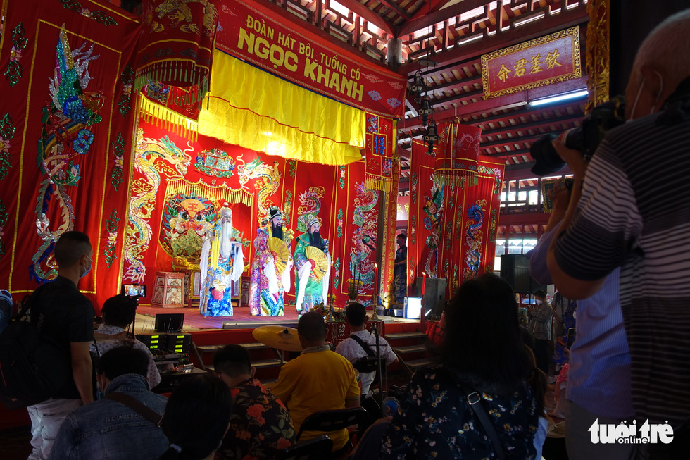

Báo Hot Trong Ngày
VNTB.Cần làm rõ động cơ gây án trong vụ tố cáo ‘đạo văn’ 21.01.2022 12:39 Hoài Nguyễn (VNTB). Biết chính xác động cơ gây án có thể trở thành tình tiết tăng nặng hoặc giảm nhẹ cho kẻ gây án, có thể nhận được sự tha thứ nhất định hoặc lên án quyết liệt từ phía dư luận xã hội.
(HNMO) - Nhân dịp Tết Nguyên đán Nhâm Dần năm 2022, chiều 17-1-2022, Sở Giáo dục và Đào tạo Hà Nội phối hợp với Công đoàn ngành Giáo dục Hà Nội đã trực tiếp đi thăm hỏi, trao quà động viên các nhà giáo có hoàn cảnh đặc biệt khó khăn.Cụ thể, đoàn công tác do Giám đốc Sở Giáo dục và Đào tạo Hà Nội Trần Thế Cương dẫn đầu đã tới thăm, tặng quà thầy giáo Ngô Văn Hiếu, Trường Phổ thông cơ sở Nguyễn Đình Chiểu (quận Hai Bà Trưng). Thầy Ngô Văn Hiếu là giáo viên khiếm thị dạy môn toán và tin học cho các học sinh khiếm thị của nhà trường. Hoàn cảnh của thầy Hiếu rất khó khăn, có 2 con nhỏ, phải thuê nhà ở. Vợ thầy Hiếu cũng bị khiếm thị, không có việc làm nên thầy là trụ cột chính trong gia đình.
Đến lăng Ông Bà Chiểu xem hát bội, múa lân sư rồng đầu năm
Ông Trần Văn Sung, phó ban quản lý khu di tích Lăng Ông Bà Chiểu, cho biết ngoài phần lễ còn có phần hội là hát bội do đoàn hát bội - tuồng cổ Ngọc Khanh biểu diễn phục vụ khách tham quan Năm nay do phòng chống dịch bệnh COVID-19 nên buổi lễ sáng nay có giới hạn số người đến tham dự, nhưng buổi lễ vẫn long trọng với các nghi thức như hằng năm.